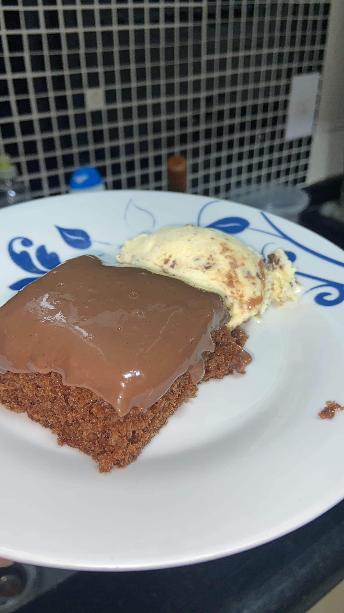

Bolo fofinho

Descricao
Um bolo fofo na medida certa, com muita cremosidade e uma calda acucarada da forma correta!
Ingredientes
- 4 ovos
- 180ml de Oleo
- 120ml de Agua
- 40gr de Cacau em po
- 250gr de Acucar
- 220gr de Farinha de trigo
- 15gr de Fermento
- 1 lata de Leite condensado
- 1 caixa de Creme de leite
- 1 colher de sopa de manteiga
- Cacau em po 50% a gosto
Modo de preparo
- Bater o ovo com acucar
- Acrescentar agua quente, oleo e cacau
- Mexer bem
- Acrescentar farinha de trigo aos poucos, sem parar de bater
- Adicionar o fermento e bater levemente
- Despejar a massa em uma forma untada
- Assar no forno a 180 graus, pre aquecido, por aproxidamente 40 minutos, ou ate furar o bolo com um garfo e ele sair limpo
- Misturar em uma panela, leite condesado, creme de leite, manteiga e cacau
- Levar ao fogo e mexer bem ate chegar na consistencia desejada
- Depois de pronto o bolo e a calda, finalize colocando a calda no bolo
Home